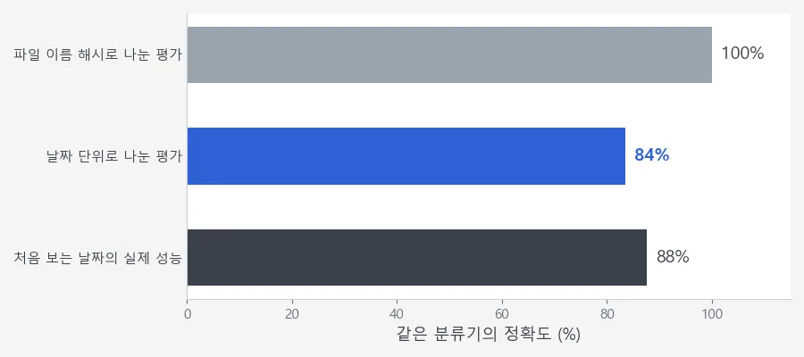

평가 점수가 너무 좋을 때
무엇이 이상했나
정렬 마크 검출 파라미터를 현장 이미지로 학습하는 도구를 만들면서, 처음에는 파일 이름의 해시값으로 학습용과 평가용을 나눴습니다. 평가 점수가 기대보다 좋게 나왔습니다. 좋은 점수일수록 먼저 의심했습니다.
원인: 같은 날 프레임이 양쪽에 섞였다
설비 이미지는 날마다 조명, 초점, 자재 상태가 조금씩 다르고, 같은 날 찍은 프레임은 서로 거의 같습니다. 파일 이름 해시로 나누면 같은 날의 거의 같은 프레임이 학습에도, 평가에도 들어갑니다. 모델은 처음 보는 이미지를 맞히는 것이 아니라 이미 본 이미지를 다시 맞히게 됩니다.
합성 데이터로 이 차이를 재현했습니다. 25일 동안 하루 50장씩, 날마다 조명이 조금씩 다른 프레임을 만들고 마크가 있는지 없는지를 가장 가까운 학습 프레임으로 맞히게 했습니다. 앞 20일로 개발하고, 뒤 5일은 "처음 보는 날짜"로 남겨 실제 성능을 쟀습니다.

# 나쁜 예: 파일 이름 해시로 나눔. 같은 날 프레임이 학습과 평가에 섞인다
is_test = zlib.crc32(name.encode()) % 5 == 0
# 바꾼 예: 날짜 단위로 통째로 나눔. 개발 20일 중 마지막 4일을 평가로 고정해 두고 바꾸지 않는다
test_days = sorted(set(days))[-4:]
is_test = day in test_days바꾼 것
- 평가셋을 날짜 단위로 나누고, 한번 정한 평가 날짜는 고정했습니다. 모델을 바꿀 때마다 같은 날짜들로 비교합니다.
- 평가 결과를 이력으로 남기고, 같은 평가셋에서 이전보다 검출이 줄거나 과검이 늘면 새 모델로 바꾸지 않게 했습니다.
- 점수를 보고할 때 어떤 단위로 나눴는지, 라벨이 어느 쪽에 유리한지, 현장 적용 전인지를 함께 적습니다.
정리
평가셋은 "앞으로 만날 데이터"처럼 나눠야 합니다. 설비 데이터는 날짜, 장비, Lot, 웨이퍼처럼 비슷한 것끼리 몰려 있어서, 무작위로 나누면 거의 항상 점수가 부풉니다. 데이터가 몰려 있는 단위를 찾아 그 단위로 통째로 나누고, 그래도 점수가 너무 좋으면 한 번 더 의심합니다.
실험은 원리를 보이려고 만든 합성 데이터이고, 사내 이미지나 실제 평가 수치가 아닙니다.